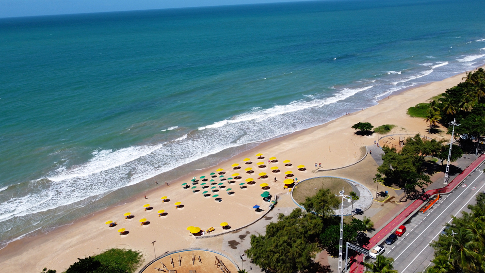

-
Instituto Ricardo Brennand & Oficina Brennand

O instituto fica em um complexo arquitetônico em estilo medieval e guarda o Museu Castelo São João, a Pinacoteca, uma biblioteca, uma capela e um jardim de esculturas. Com um dos maiores acervos de armas brancas do mundo, reúne mais de 3 mil peças, sendo que a maioria veio da Europa e da Ásia.
Ali também dá para admirar a coleção de pinturas, tapeçarias, armaduras, espadas, punhais e facas. -
Praia de Boa Viagem
A Praia de Boa Viagem é famosa no mundo inteiro e, portanto, não pode ficar de fora do roteiro de ninguém! Principal praia urbana de Recife, uma caminhada pela orla é sempre bem-vinda.
Aproveite ainda para curtir a ótima infraestrutura e para saborear os quitutes vendidos por ambulantes, como queijo assado e caldos de peixe, camarão e feijão. A água do mar é verdinha e quase sempre morna, mas tenha em mente as seguintes precauções: evite o mergulho na maré alta e se tiver, qualquer tipo de sangramento, não use nenhum objeto brilhante e não se afaste da areia.